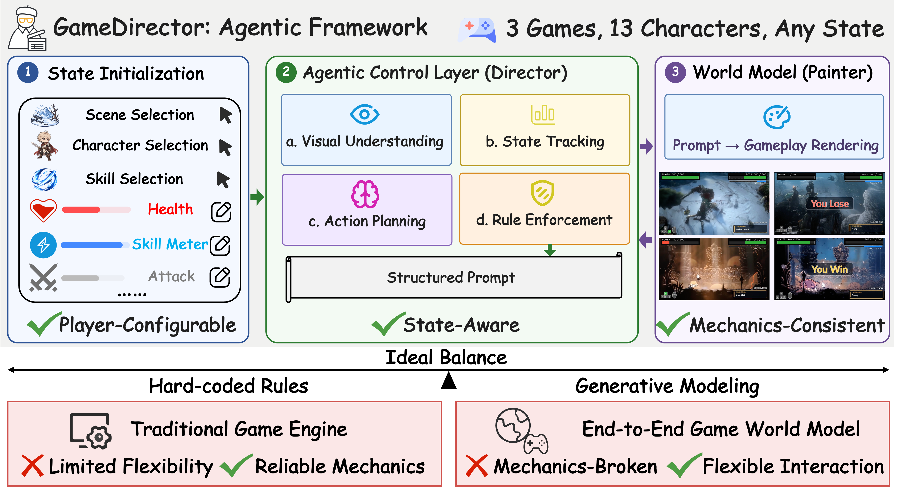
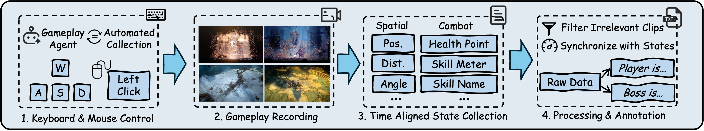
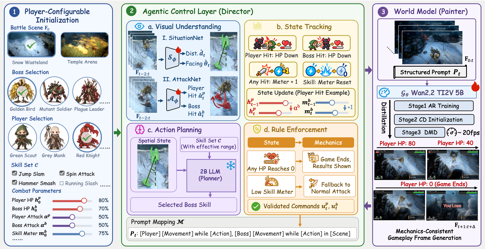

Configure
Select the scene, characters and skills. Set health points, attack strengths, skill meters and skill-specific rules.
ICLR 2027 · Anonymous submission
Configure the game. Direct the action. Generate the world.
Explore the visualizationsRecent game world models support realistic visual simulation and interactive gameplay based on player inputs. However, they typically learn environment dynamics from pixel-level supervision, jointly modeling perception, memory, state transitions, and rendering within a single end-to-end framework. While this design enables open-ended, action-controllable generation, it still falls short of delivering a complete gameplay experience. Games are governed by explicit mechanics, such as health deduction, skill activation, combat rules, and termination conditions. These mechanics depend on precise and consistent state transitions that generative models alone cannot reliably enforce. In contrast, traditional game engines can guarantee such mechanics through hard-coded rules, but provide limited flexibility for player-driven creation. To bridge these paradigms, we introduce GameDirector, the first agentic framework that decouples rule-based gameplay logic from visual rendering. Given player-defined configurations, the framework acts as an intelligent director that interprets visual observations, updates game states, tactically controls NPCs, and enforces gameplay rules. It then translates these decisions into text prompts that guide the video world model to faithfully render the resulting gameplay. This separation allows players to configure characters, states, and rules much like a game developer while preserving coherent game mechanics. Experiments on three games, using data collected by our automated gameplay agent, show that GameDirector achieves accurate state tracking, reliable rule following, and improves boss action quality by more than 15.9% over various end-to-end game world model settings. Overall, by externalizing player-controllable game logic, GameDirector establishes an effective middle ground between hard-coded simulation and generative modeling, enabling more flexible and closed-loop gameplay experiences.

An automated gameplay agent collects synchronized gameplay videos, player controls, boss actions and engine-internal states across No Rest for the Wicked, Vampire and Hollow Knight. The dataset contains 51,758 clips spanning 13 characters—5 players and 8 bosses—with 300 clips reserved for evaluation (100 per game).

The player sets the stage. The director decides what happens. The painter brings it to life.

Select the scene, characters and skills. Set health points, attack strengths, skill meters and skill-specific rules.
AttackNet and SituationNet interpret combat. Explicit states, a 2B language-model planner and rule enforcement determine valid actions.
A Wan2.2-TI2V-5B world model renders structured prompts. Visual feedback closes the loop between game logic and generation.
The same director narrates two different starting configurations — health, attack strength and skill meters — while the rendered gameplay stays faithful to each state.
A skill learned on one boss is reassigned to another. The director keeps the action legible while the world model preserves each character's appearance.
Given the spatial context, the 2B action planner selects a skill consistent with distance, facing and cooldown rules — and the render follows through.
GameDirector's agentic control outperforms every end-to-end game world model baseline on state alignment, mechanics fidelity and boss decision quality.
Tracked states always follow game mechanics — HP and skill meters update exactly as they should.
VLM-judged adherence to termination and cooldown rules, best across both GPT-5.5 and Gemini judges.
Boss actions fit the spatial context and available skills, up to +20 points over the best baseline.
AttackNet's hit detection and SituationNet's spatial classification both exceed 90% accuracy across all three games.
| State Modeling | Boss Control | ||||||||
|---|---|---|---|---|---|---|---|---|---|
| Setting | None | Predictive | Implicit | Explicit | GPT-5.5 | Gemini | GPT-5.5 | Gemini | |
| (1) Matrix-Game | ✓ | ✓ | -- | 25.1± 0.7 | 25.0± 0.3 | 56.5± 0.3 | 56.8± 0.3 | ||
| (2) ReactiveGWM | ✓ | ✓ | -- | 21.4± 0.2 | 21.4± 0.1 | 72.5± 0.8 | 72.4± 0.2 | ||
| (3) WildWorld | ✓ | ✓ | 70.38 | 34.3± 0.5 | 34.1± 0.4 | 65.9± 0.3 | 66.2± 0.4 | ||
| (4) StatePlay | ✓ | ✓ | 72.01 | 28.1± 0.3 | 28.2± 0.1 | 71.9± 0.3 | 73.0± 0.3 | ||
| GameDirector (Ours) | Agentic | Agentic | 100.0 | 98.5± 0.2 | 99.6± 0.2 | 88.4± 0.7 | 93.0± 0.6 | ||
| AttackNet | SituationNet | ||||||
|---|---|---|---|---|---|---|---|
| Game | |||||||
| Game N | 0.8476 | 90.53 | 0.3556 | 10.91 | 89.29 | 87.06 | 86.95 |
| Game V | 0.9135 | 92.48 | 0.1876 | 2.22 | 96.72 | 96.31 | 96.31 |
| Game H | 0.8871 | 96.11 | 0.2637 | 6.39 | 96.49 | 96.49 | 96.49 |
| Average | 0.8906 | 92.94 | 0.2690 | 6.51 | 94.17 | 93.29 | 93.25 |
Game N: No Rest for the Wicked · Game V: Vampire · Game H: Hollow Knight.